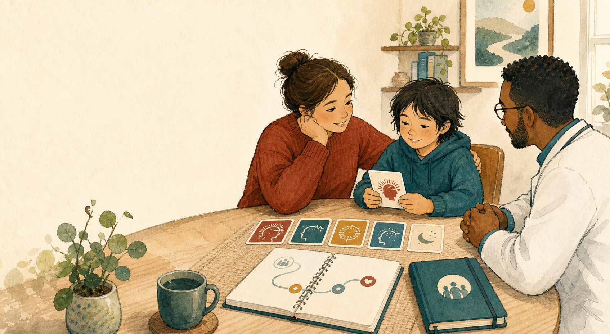

Seizure types
What kind of events are happening? Drops, stiffening, staring, convulsions, sleep events, or mixed patterns?
Short audio and visual guides for families after epilepsy clinic.
Lennox-Gastaut syndrome
LGS can feel like too much information at once. This guide keeps the first pass simple: seizure types, daily treatment, rescue, safety, and what to bring back to clinic.
NotebookLM audio draftA family-facing first pass generated from the source packet, medication/device framing, and public LGS / seizure first-aid sources.
1:37 medication/device draft | clinician review needed before sharing
Start here
What kind of events are happening? Drops, stiffening, staring, convulsions, sleep events, or mixed patterns?
Which seizures are most dangerous or disruptive right now: injury, long seizures, clusters, school disruption, sleep?
Which medicines are being used, what are they targeting, and what side effects should the family watch?
What should caregivers do if a seizure lasts too long, repeats, or recovery is not normal?
If seizures stay hard to control, what other categories should the family ask about: diet, devices, surgery evaluation, school supports?
Why names matter
The same person may have more than one kind of seizure. Naming the pattern helps the team decide what risk to reduce first.
How the team thinks
LGS often needs more than one medicine. Examples your team may discuss include valproate, clobazam, lamotrigine, topiramate, rufinamide, felbamate, cannabidiol, fenfluramine, or other options.
Some families discuss ketogenic-style diet therapy, VNS, RNS, DBS, corpus callosotomy, or other surgery-oriented evaluations when seizures remain hard to control.
The rescue plan is separate from daily medicine. Use rescue medication only as prescribed in the seizure action plan.
Medication conversations
LGS medication plans are often combinations. The useful clinic question is what the team is targeting and what tradeoff to watch.
Beyond daily medicine
If seizures remain hard to control, the team may discuss non-medicine options. Which option fits depends on seizure type, testing, anatomy, age, goals, and risk.
Neuromodulation devices use controlled stimulation to reduce seizure burden for selected patients. VNS is commonly discussed in LGS. RNS or DBS may be considered in some epilepsy programs depending on the pattern and evaluation.
For some patients, especially when drop seizures cause injuries, the team may discuss surgery-oriented evaluation or corpus callosotomy. This is a specialist conversation about reducing risk, not a promise of seizure freedom.
Ketogenic diet, modified Atkins, or low-glycemic approaches may be discussed for some patients. These need medical supervision because nutrition, growth, labs, medicines, and side effects matter.
Before the next visit
You do not need perfect notes. The most useful notes help the team see patterns.
Describe the first sign, the main movement or behavior, awareness, breathing, color change, falls, injuries, and whether it happened in sleep.
Time the active seizure when you can. Timing helps decide when the rescue plan or emergency plan applies.
Note sleepiness, confusion, weakness, behavior change, injury, or whether the person did not return to their usual state.
Safety
Follow the patient's own seizure action plan. In general, seek emergency help for a seizure lasting longer than 5 minutes, repeated seizures, trouble breathing, seizure in water, injury, pregnancy or serious illness, first-time seizure, not returning to usual state, or if the person asks for medical help.
Bring back to clinic
Which seizure type are we trying to reduce first?
What side effect or behavior change should we watch for?
When should we use rescue medicine or call for help?
If this plan is not enough, what category comes next?
Reliable resources
Treatment categories, rescue therapy, diet, and device overview